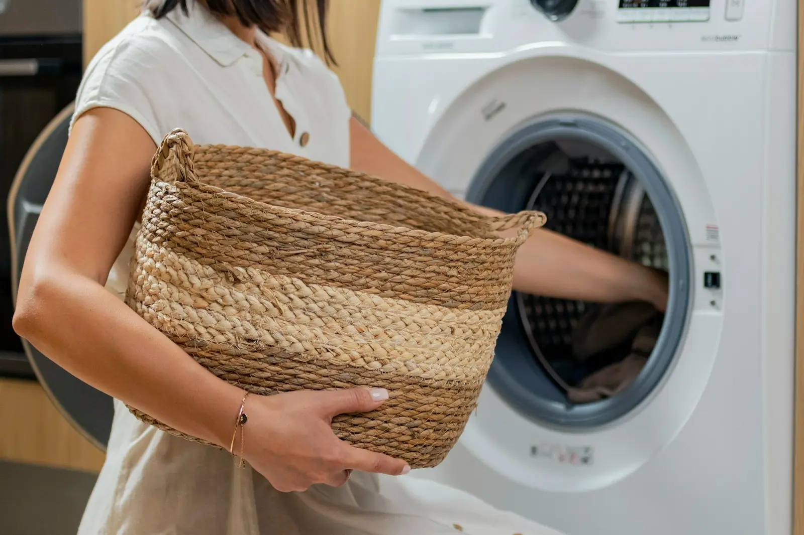
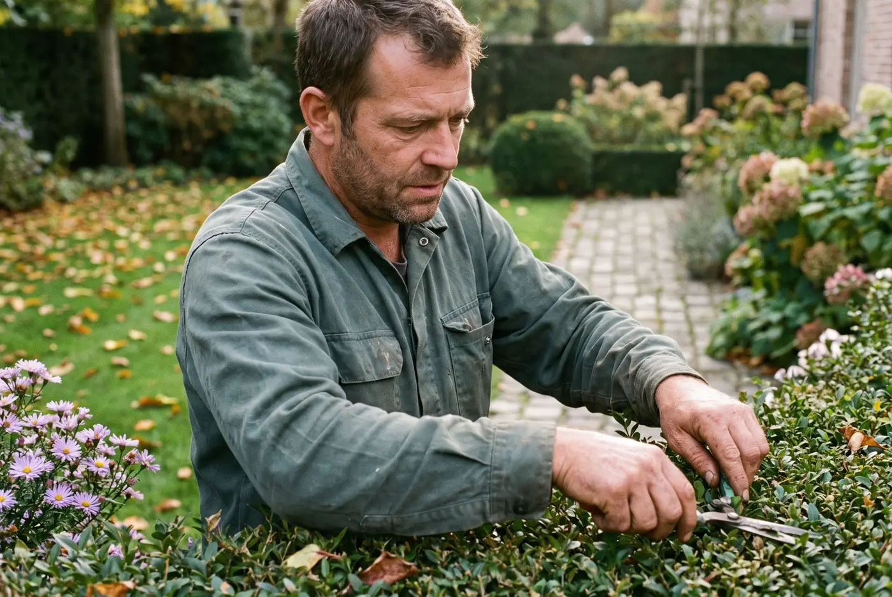
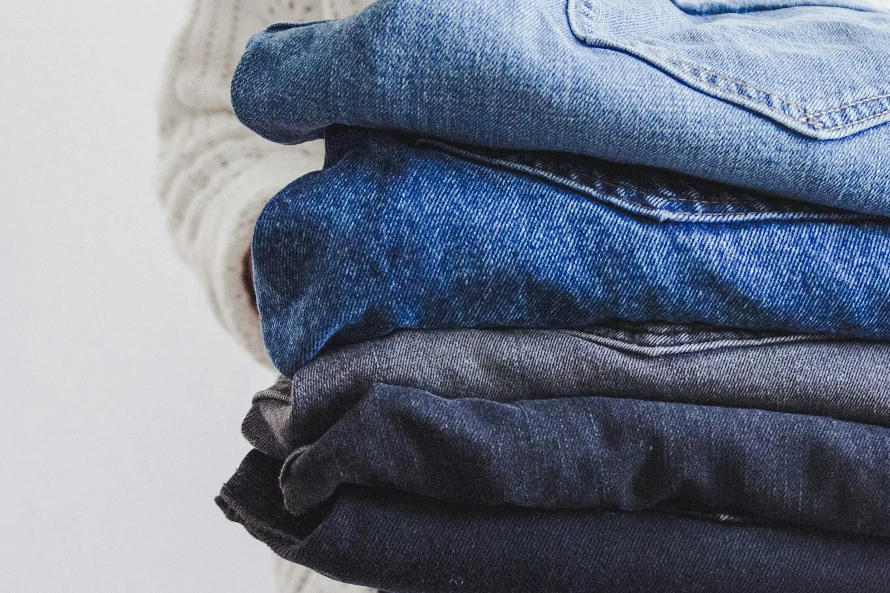

In huis
Poetsen en huishouden
- Alle ruimtes poetsen
- Stofzuigen en dweilen
- Keuken en badkamers
- Ramen langs binnen
- Kasten opruimen
- Afwas
Wat we doen
Een Zondag werkt in huis en uit huis: koken, de kinderen ophalen en begeleiden, strijken, boodschappen, de tuin en je zaak. Eén vaste persoon voor alles wat je anders zelf zou doen.
In huis

In huis
In en uit huis

In en uit huis

Uit huis
Op locatie
Bij jou thuis

Uit huis
En eigenlijk elk klusje in of rond het huis dat niet te technisch is. Twijfel je of iets erbij hoort? Vraag het gewoon.
Vraag je Zondag aan →Wat is een Zondag?
1Een medewerker van Zondags die je inboekt voor een vast aantal uren per maand op je zaak of vennootschap. Steeds dezelfde persoon, op dezelfde dag, op hetzelfde uur.
Ervaringen
Rika C. heeft een Zondag voor het volledige huishouden en is er zeer tevreden over.
Koen D. laat zijn Zondag elke week de boodschappen doen en koken. Het eten staat klaar wanneer hij thuiskomt.
Laat in twee minuten weten wat je nodig hebt. Binnen één werkdag belt een van ons je persoonlijk terug.
Vraag je Zondag aan →